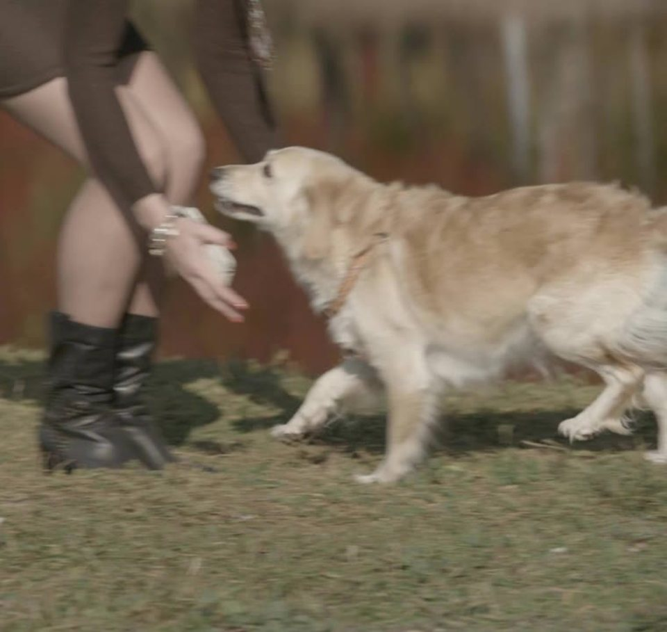
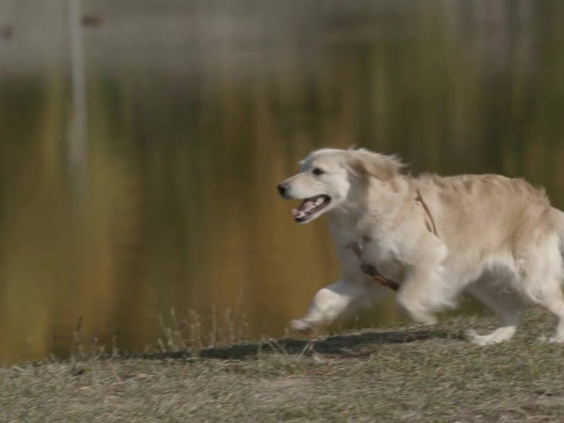
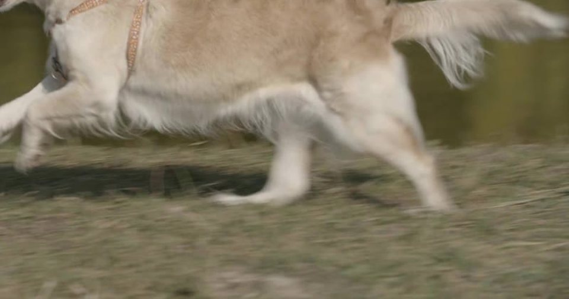
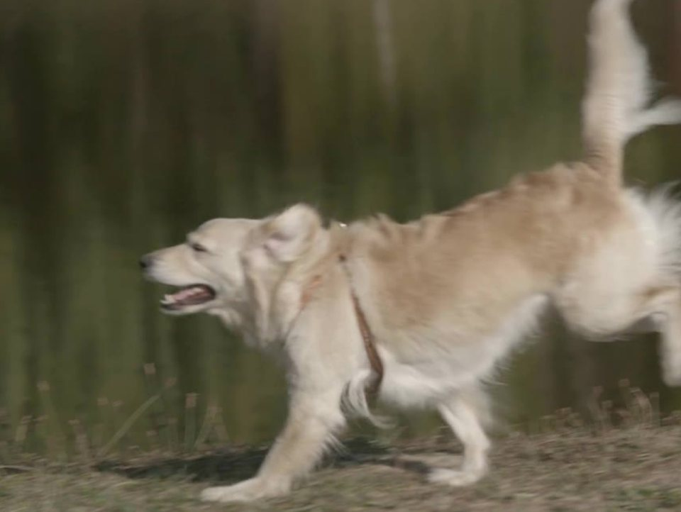

Where every story begins with kindness.
PawHaven is a gentle corner of the internet for animals waiting to be loved, and for people ready to love them.



A small idea, planted like a blossom.
PawHaven began with a simple belief: the right home is out there for every animal, and finding it should feel as warm as the moment you meet.
Like cherry blossoms, adoption is a season worth celebrating. It is fleeting, hopeful and full of new beginnings. So we built a place that treats each profile with care, each match with patience, and every adopter like family.
PawHaven is a demonstration website. Its shelters, pets and people are illustrative.
Our mission
To give every animal a loving home, and every home a loving companion.
Adopting is an act of hope.
Millions of animals need homes, while others are bred for sale. When you adopt, you give a deserving animal a family and make room for the next rescue to be saved.
Adopted animals are often already house-trained, health-checked and well understood. They are not “damaged”: they are simply waiting, and they remember who opened the door.

What guides every match
Compassion
Every animal is an individual with feelings, fears and favourite things.
Honesty
We describe each animal truthfully, quirks included, so matches last.
Responsibility
Adoption is a promise. We prepare people and pets for the long road together.
Community
Adopters, volunteers and fosters make this possible, together.
Care at every step
From the first rescue to the first night at home, here is how we look after animals and the people who love them.
- Rescue & veterinary careEvery animal receives a health check, vaccinations, and any treatment they need before they meet you.
- Foster homesFoster families give animals a quiet start in a real home, so we learn their true personalities.
- Thoughtful matchingWe listen to your lifestyle and match for the long term, so fewer animals ever return.
- Lifelong supportTraining tips, check-ins and a friendly community stay with you long after adoption day.